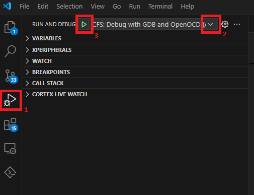

Build Guide
Cloning
Clone this repository with its submodules:
git clone https://github.com/adi-innersource/max32690-usb-spe-bridge bridge
cd bridge
git submodule update --init
There are several submodules utilized by this project: no-os, tinyuf2, tinyUSB and uf2.
Config.mk
All of the primary build configuration variables are located in config.mk and are required to be specified for the building process.
PLATFORM
Specifies the Platform the project should be built for. Current options are ADIN1140 and T1SUSB.
# Conditional source files depending on the hardware platform
# Options are: ADIN1140 - EVAL-ADIN1140D1Z
# T1SUSB - T1S to USB Adapter Board
PLATFORM := T1SUSB
APP
Specifies the application to build. By default T1S_Bridge is built. The APP
value corresponds directly with the folder name located in ./src/Apps/.
USE_BOOTLOADER
By setting USE_BOOTLOADER to 1, the application assumes a bootloader is located in the upper portion of flash and will manage running the application. When set to 1, the application will start at FLASH_BOOT_SIZE offset in memory. In addition, a UF2 file will automatically be generated for drag-and-drop programming.
It is important to note that the bootloader MUST be programmed into flash when using this option since the application will no longer be at the flash origin, it will not start without the bootloader kicking it off.
FLASH_BOOT_SIZE
This is the amount of flash used by the bootloader, and will be the offset in flash that the application starts. 32kB is the default value and is sufficient. If the bootloader is modified to support additional functionality, this may need to be adjusted.
PYTHON
The UF2 generation tool is a python script. On most systems leaving this variable as python is sufficient. However, if your python installation is not in your PATH, this can be adjusted.
Building the Application Project
This project utilizes Analog Devices’ Code Fusion Studio (CFS) version 2.1.0.
Open the project folder in VS Code with the CFS extension installed. The folder should be the root folder that contains the Makefile.
Select the CodeFusion Studio Plugin window.
In the Actions panel, select Build (max32690-usb-spe-bridge)
Upon completion a summary of the project should be present in the VS Code terminal. For example:
Memory region Used Size Region Size %age Used
ROM: 0 B 128 KB 0.00%
FLASH: 99996 B 3328 KB 2.93%
PAL_NVM_DB: 0 B 0 B
RISCV_FLASH: 0 B 0 B
SRAM: 290904 B 1 MB 27.74%
MAILBOX_0: 0 B 0 B
MAILBOX_1: 0 B 0 B
HPB_CS0: 0 B 256 MB 0.00%
HPB_CS1: 0 B 256 MB 0.00%
arm-none-eabi-size --format=berkeley /d/T1S/ADIN1140_Bridge/max32690-usb-spe-bridge/build/max32690-usb-spe-bridge.elf
text data bss dec hex filename
97956 2040 288856 388852 5eef4 D:/T1S/ADIN1140_Bridge/max32690-usb-spe-bridge/build/max32690-usb-spe-bridge.elf
Flashing
Tip
Ensure your debug probe (OpenOCD/Pico, or JLink) is connected to your target hardware and the hardware is powered on.
Select the CodeFusion Studio Plugin window.
In the Actions panel, select
For MAX PICO/OpenOCD Debuggers
Flash (OpenOCD) (max32690-usb-spe-bridge)For Segger JLink Debuggers
Flash (JLink) (max32690-usb-spe-bridge)
The terminal window will indicate the flashing operation. Below is a typical output for OpenOCD/PICO based flashing. JLink output will differ from this.
The target architecture is set to "armv7e-m".
`Open On-Chip Debugger (Analog Devices 0.12.0-1.2.0) OpenOCD 0.12.0 (2025-04-03-09:08)
Licensed under GNU GPL v2
Report bugs to <processor.tools.support@analog.com>
0x0000fff4 in ?? ()
Loading section .text, size 0x17e9c lma 0x10000000
Loading section .ARM.exidx, size 0x8 lma 0x10017e9c
Loading section .data, size 0x7f8 lma 0x10017ea4
Start address 0x10005fb8, load size 99996
Transfer rate: 33 KB/sec, 11110 bytes/write.
Section .text, range 0x10000000 -- 0x10017e9c: matched.
Section .ARM.exidx, range 0x10017e9c -- 0x10017ea4: matched.
Section .data, range 0x10017ea4 -- 0x1001869c: matched.
SWD DPIDR 0x2ba01477
[max32xxx.cpu] halted due to breakpoint, current mode: Thread
xPSR: 0x01000000 pc: 0x0000fff4 msp: 0x2000a900
[Inferior 1 (Remote target) detached]
Debugging
Tip
Ensure your debug probe (OpenOCD/Pico, or JLink) is connected to your target hardware and the hardware is powered on.
In the VS Code, select the Run and Debug panel from the left side (1), and using the Run and Debug drop down (2) select the Debug action based on your connected debug probe.
Select the play button (3) to start the debugging session.

UF2 File Generation
If USE_BOOTLOADER is enabled in config.mk, at the completion of the build process, a .uf2 file will be created in the build folder. This can be used for drag-and-drop programming.
Building the Bootloader Project
The bootloader build tasks are accessed from the _application_ project folder as above. This allows for build-flash-run of both the bootloader and application from the same VS Code window.
Select the CodeFusion Studio Plugin window.
In the Actions panel, select CFS: Bootloader Build (max32690-usb-spe-bridge)
Upon completion a summary of the project should be present in the VS Code terminal. For example:
Memory region Used Size Region Size %age Used
ROM: 0 B 128 KB 0.00%
FLASH: 25436 B 32 KB 77.62%
SRAM: 26424 B 1048572 B 2.52%
HPB_CS0: 0 B 256 MB 0.00%
HPB_CS1: 0 B 256 MB 0.00%
arm-none-eabi-size --format=berkeley D:/T1S/ADIN1140_Bridge/max32690-usb-spe-bridge/bootloader/build/bootloader.elf
text data bss dec hex filename
25436 0 24008 49444 c124 D:/T1S/ADIN1140_Bridge/max32690-usb-spe-bridge/bootloader/build/bootloader.elf
Flashing
Tip
Ensure your debug probe (OpenOCD/Pico, or JLink) is connected to your target hardware and the hardware is powered on.
Select the CodeFusion Studio Plugin window.
In the Actions panel, select
For MAX PICO/OpenOCD Debuggers
CFS: Bootloader Flash (OpenOCD) (max32690-usb-spe-bridge)For Segger JLink Debuggers
CFS: Bootloader Flash (JLink) (max32690-usb-spe-bridge)
The terminal window will indicate the flashing operation. Below is a typical output for OpenOCD/PICO based flashing. JLink output will differ from this.
The target architecture is set to "armv7e-m".
Open On-Chip Debugger (Analog Devices 0.12.0-1.2.0) OpenOCD 0.12.0 (2025-04-03-09:08)
Licensed under GNU GPL v2
Report bugs to <processor.tools.support@analog.com>
0x000001e4 in ?? ()
Loading section .text, size 0x59e4 lma 0x10000000
Loading section .ARM.exidx, size 0x8 lma 0x100059e4
Loading section .data, size 0x970 lma 0x100059ec
Start address 0x10003ef4, load size 25436
Transfer rate: 14 KB/sec, 6359 bytes/write.
Section .text, range 0x10000000 -- 0x100059e4: matched.
Section .ARM.exidx, range 0x100059e4 -- 0x100059ec: matched.
Section .data, range 0x100059ec -- 0x1000635c: matched.
[max32xxx.cpu] halted due to breakpoint, current mode: Thread
xPSR: 0x01000000 pc: 0x000001e4 msp: 0x2000a700
Debugging
Currently there is not an integrated Debug task for the Bootloader project. Similar debug techniques as the application can be used with OpenOCD or JLink as needed.